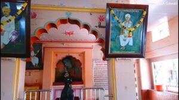

नेवासा – संत ज्ञानेश्वर मंदिर हे भारताच्या महाराष्ट्र राज्यातील अहमदनगर जिल्ह्यातील नेवासा तालुक्याचे मुख्य ठिकाण आहे. हे शहर प्रवरा नदीच्या काठावर वसलेले आहे.
नेवासा – ज्ञानेश्वरीचे निर्मितीस्थान
या गावातील करवीरेश्वराच्या देवळात राहून ज्ञानेश्वरांनी इसवी सनाच्या तेराव्या शतकात भावार्थदीपिका हा भगवद्गीतेचे मराठीत निरूपण करणारा ओवीबद्ध ग्रंथ लिहिला. या ग्रंथालाच आपण ज्ञानेश्वरी म्हणतो. ज्या मंदिरातील एका खांबाला टेकून ज्ञानेश्वरांनी आपली ज्ञानेश्वरी पहिल्यांदा वाचली तो खांब अजूनही नेवासे या गावात आहे. त्याला पैस असे म्हणले जाते. काळाच्या ओघात करवीरेश्वराचे मंदिर नष्ट झाले.पैस खांबाच्या भोवती बांधण्यात आलेल्या नव्या मंदिराचे उद्घाटन १९६३ साली झाले. या मंदिराच्या मागे ‘ज्ञानेश्वर उद्यान’साकारण्याचे काम सुरू आहे.
मोहिनीराज मंदिर
याशिवाय, नेवासे येथे मोहिनीराजाचे एक जुने मंदिर आहे. पौराणिक कथांत लिहिल्याप्रमाणे राहूचा वध करण्यासाठी भगवान विष्णूंनी मोहिनीचे रुप घेतले आणि राहू या असुराचा वध केला. जिथे हा राहूचा वध झाला ते ठिकाण म्हणजे नेवासे येथील हे मंदिर अशी लोकांची श्रद्धा आहे. हे मंदिर कलात्मकतेचा सुंदर नमुना असून, मंदिर स्थापत्य कलेच्या दृष्टीनेही विशेष महत्त्वाचे आहे.
पुरातत्वीय महत्त्व
या ठिकाणी पुरातत्व खात्याने उत्खनन केले असून येथे दगडी हत्यारे सापडली आहेत. त्यात हातकुर्हाडी सापडल्या आहेत.